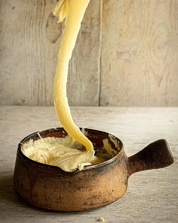

Algot
L'aligot est originaire de la région de l'Aubrac dans le sud de la France, spécifiquement des départements de l'Aveyron, du Cantal et de la Lozère. Son histoire remonte au XVIe siècle, lorsqu'il a été créé par des moines de la région.
Ingrédients :
- 1 kg de pommes de terre, pelées et coupées en morceaux
- 240 ml de crème épaisse
- 4 gousses d'ail, hachées
- 115 g de beurre non salé
- 200 g de fromage râpé (traditionnellement du fromage Tomme ou Cantal, mais vous pouvez aussi utiliser de la mozzarella ou du Gruyère)
- Sel et poivre selon le goût
Instructions :
- Faites cuire les pommes de terre jusqu'à ce qu'elles soient tendres, environ 15 à 20 minutes. Égouttez bien.
- Chauffez la crème épaisse et l'ail haché à feu doux jusqu'à ce qu'ils soient chauds.
- Écrasez les pommes de terre jusqu'à ce qu'elles soient lisses.
- Incorporez le beurre fondu jusqu'à ce qu'il soit bien combiné.
- Ajoutez progressivement le mélange de crème chaude aux pommes de terre écrasées, en remuant constamment.
- Une fois que la crème est totalement incorporée, ajoutez progressivement le fromage râpé, en remuant continuellement jusqu'à ce qu'il soit fondu et lisse.
- Assaisonnez selon votre goût avec du sel et du poivre.
- Servez chaud en accompagnement de viandes grillées ou de saucisses.